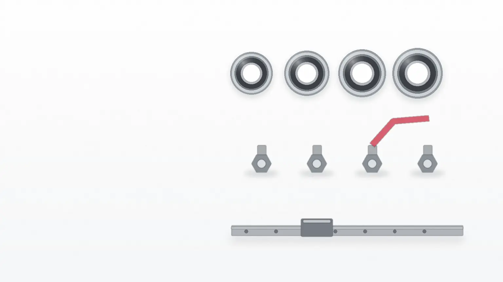

見本サイト・架空架空の事業を想定した制作イメージです。事業・価格・住所はすべて架空です。
CA07 先進情報型サイトこの見本の設計メモ
入口 2つ ／ 必須 4〜5項目
品番が分かる方は品番と数量だけ。分からない方は、寸法・材質・使う場所から問い合わせできます。

フォーム このページから（下の入力欄）FAX・電話 番号は【要確認】返信の目安と締め時刻 送信のボタンの手前にまとめています
入力した内容は、送る前に依頼票で確かめられます。
分類（分からなければ「分からない」）
分かる寸法だけで大丈夫です（mm）
チューブの外径（mm）
レールの長さ（mm）
必須 0／4〜5 入力済み
送る前に、取り寄せ日数・最小数量・送料・締め時刻を表で確かめられます。
この操作は、見本のため実際には行われません。